Test Objective
This lab demonstrates how OpenDaylight can build a global traffic-engineering view and compute constrained end-to-end paths across multiple independent SR-MPLS domains. The goal is not to collapse every region into a single IGP domain, but to preserve regional autonomy while still enabling end-to-end traffic engineering.
Regional Architecture
The environment contains four independent regional SR-MPLS domains: Australia, Singapore, Japan and Hong Kong. Each region has its own IS-IS/SR-MPLS control plane, with Provider Edge (PE) routers and Provider Border Routers (PBRs).
Inter-Domain WAN
The regions are interconnected through BGP Label Unicast (BGP-LU) links between the PBRs. The validated lab contains 10 physical WAN links represented as 20 directional topology edges. Australia and Japan have no direct WAN connection.
Global Traffic Engineering
BGP-LS exports the regional topology and Segment Routing information into OpenDaylight. ODL uses that information to build the base global Traffic Engineering Database (TED), allowing SPF, CSPF and SAMCRA to evaluate end-to-end paths across regional boundaries.
Path Programming
The selected global path is translated into domain-specific SR-MPLS forwarding instructions and the required BGP-LU transition. The orchestration layer resolves the destination-specific BGP-LU forwarding state, translates the outgoing label into the local/incoming label that the ingress PE must push, and programs both directions through PCEP as one logical transaction.
End-to-End Control Workflow
BGP-LS provides the regional topology and SR information that forms the base global TED. The collectors then enrich those existing links with live operational data such as delay, jitter, loss, bandwidth and BGP-LU forwarding state. CSPF or SAMCRA computes the constrained end-to-end path, which is then decomposed into native per-domain SR segments and BGP-LU transitions. The orchestration layer compiles the selected path and uses ODL PCEP to program the resulting bidirectional LSP pair.
How the Global TED Is Built
The information in the ODL metric table comes from two different sources. BGP-LS gives ODL the network graph and Segment Routing attributes, while the collectors add live operational data from the routers. This separation is important: the collectors do not invent the IS-IS links. They enrich links that ODL has already learned through BGP-LS.
1. IS-IS and SR Topology
The routers run their normal regional IS-IS/SR-MPLS control planes. BGP-LS exports the resulting topology and SR attributes to OpenDaylight.
ODL learns: nodes, directional IS-IS links, IGP/TE metrics, Prefix/Node SIDs and adjacency-SID information.
2. Collector Uses the BGP-LS-Derived Graph
The collector reads the graph that ODL built from BGP-LS and uses it as the base inventory. Local and remote addresses, router identity and edge direction are used to correlate each measurement with the correct ODL edge.
Important: native IS-IS links already exist before telemetry enrichment begins.
3. NETCONF and RPM Enrichment
The collectors connect to the Juniper routers over NETCONF. Junos RPM provides delay, jitter and packet-loss measurements, while interface data provides capacity and current traffic levels.
Derived values: delay, jitter, loss, maximum bandwidth, utilization and available bandwidth.
4. BGP-LU Forwarding State
NETCONF is also used to read MPLS/BGP-LU forwarding state from the PBRs. The collector records local/incoming-to-outgoing label mappings on the matching WAN edge.
Example: 321 → 51 means label 321 is local to the ingress side and is swapped to label 51 toward the WAN.
Where Each Field Comes From
BGP-LS: topology, IS-IS links, IGP/TE metrics and SR SID information.
NETCONF + RPM: delay, jitter and packet loss.
NETCONF interface statistics: link capacity and utilization; available bandwidth is derived from those values.
NETCONF MPLS state: BGP-LU incoming-to-outgoing label mappings.
Why This Matters
ODL therefore sees more than connectivity. It has a global topology plus live operating conditions and forwarding state. That allows the path-computation engine to make decisions using the current state of the network rather than only static IGP cost.
The measurements are directional, so AU → SG and SG → AU can have different delay, loss, bandwidth or label state and can be evaluated independently.
Key Architectural Point
Topology visibility and forwarding reachability are separate problems. BGP-LS gives the controller a global view of the network, but independent IGP domains still need an inter-domain forwarding mechanism such as BGP-LU. This experiment brings those two pieces together in one constraint-based TE workflow.
Actual EVE-NG Lab Topology
The complete EVE-NG implementation of the four independent regional SR-MPLS domains. Each region maintains its own IS-IS / SR-MPLS control plane, while Provider Border Routers (PBRs) provide the physical inter-domain connectivity used by the BGP-LU multi-domain traffic-engineering test.
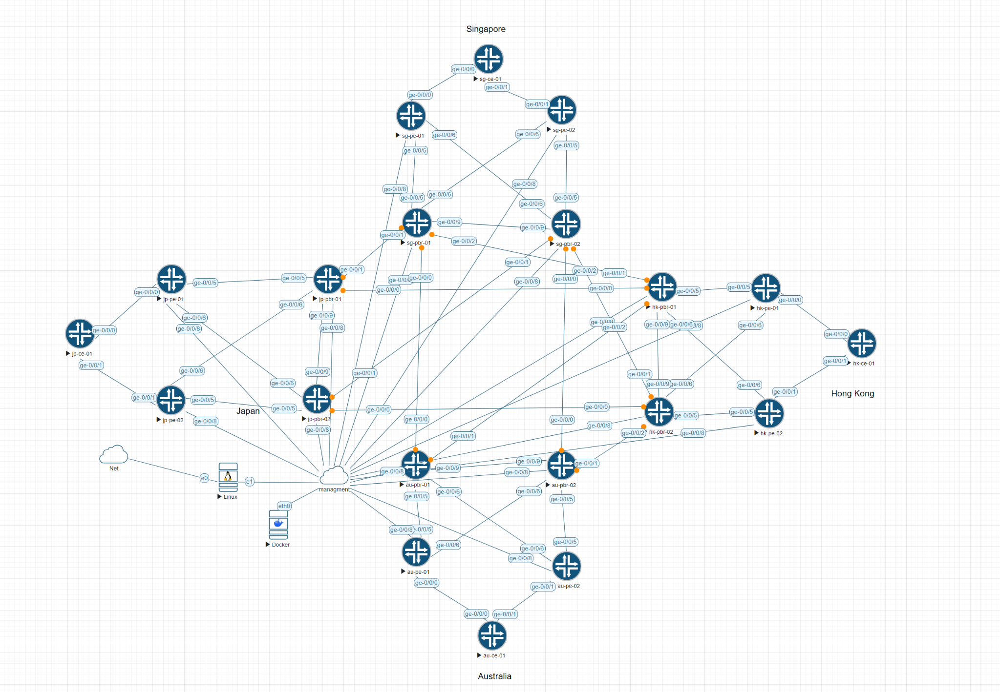
Actual implementation view. The management network shown in EVE-NG is operationally separate from the forwarding topology.
Live Global Traffic Engineering Database in OpenDaylight
OpenDaylight maintains a single multi-domain TE view that combines the regional SR-MPLS topology, inter-domain BGP-LU WAN transitions, live performance telemetry and forwarding metadata used by path computation and orchestration.
Topology and Forwarding State
LOCAL / REMOTE — directional link endpoints across all four regions and the WAN.
MET / TE — IGP and Traffic Engineering metrics.
L-SID / R-SID — local and remote SR Prefix / Node SID information.
ADJ — native SR adjacency SID where one exists.
BGP-LU(IN>OUT) — local/incoming to outgoing BGP-LU label mappings on inter-domain WAN edges.
Live Engineering Telemetry
DELAY / JITTER / LOSS — measured path-quality attributes.
AVAIL / UTIL / MAX — available bandwidth, current utilization and link capacity in Mbps.
10.11.x.x — native regional SR-MPLS links.
10.88.88.x — inter-domain BGP-LU WAN transitions between PBRs.
16 / 16 vertices — all discovered vertices have Prefix / Node SID information.
One Global TED — Topology + Telemetry + Forwarding Metadata
The table below is intentionally shown in full. It demonstrates that ODL is doing much more than storing topology: the global TED also contains the operational statistics and forwarding metadata needed to evaluate end-to-end paths across independent SR-MPLS domains. Native 10.11.x.x links carry SR adjacency information, while 10.88.88.x WAN edges carry BGP-LU label mappings rather than fabricated SR Adj-SIDs.
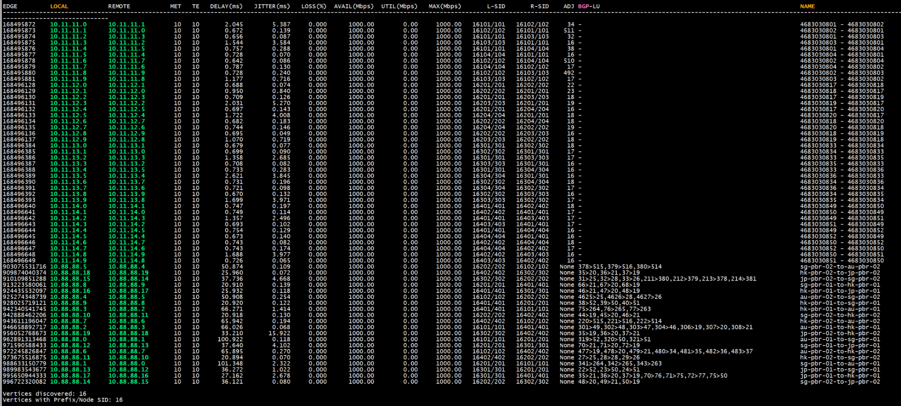
Demo message: ODL has one global operational view of the network — topology, TE metrics, delay, jitter, loss, bandwidth, utilization, SR SIDs and BGP-LU label translations — so CSPF and SAMCRA can make decisions from controller-wide information rather than from one router's local view.
Baseline Controller Proof — PBR01 Selected
Before the latency preference was changed, the same orchestration workflow selected the PBR01 pair. The screenshots below show the controller-side decision chain from global path computation through label resolution, bidirectional validation and PCEP programming. This gives the report a complete baseline that can be compared directly with the later PBR02 re-optimization.
1. Global Path Computation Selects PBR01
SAMCRA reads the live ODL graph and selects the forward path from AU-PE01 through
AU-PBR01 → SG-PBR01. The WAN transition is the directional edge
10.88.88.0 → 10.88.88.1.
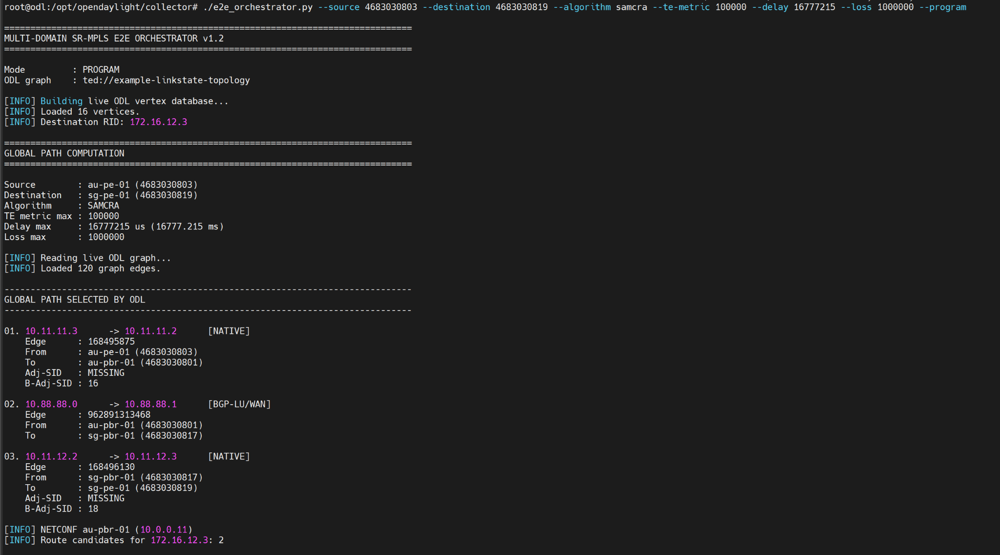
2. Forwarding Plan Resolves BGP-LU 321
The forwarding compiler decomposes the selected path into native SR segments plus the
BGP-LU WAN transition. NETCONF resolution identifies the destination-specific forwarding
state, and the ODL label mapping translates it to the local/incoming label
321 required by the ingress PE. The SID : 16 /
SID source : backup-adj-sid shown in the plan output is the ODL-derived
directional backup adjacency SID for the selected native edge. The PCEP compiler does not
copy that edge-level Adj-SID into the head-end ERO; it represents the source segment with
the selected PBR Node-SID 16101, followed by the translated BGP-LU
ingress label.
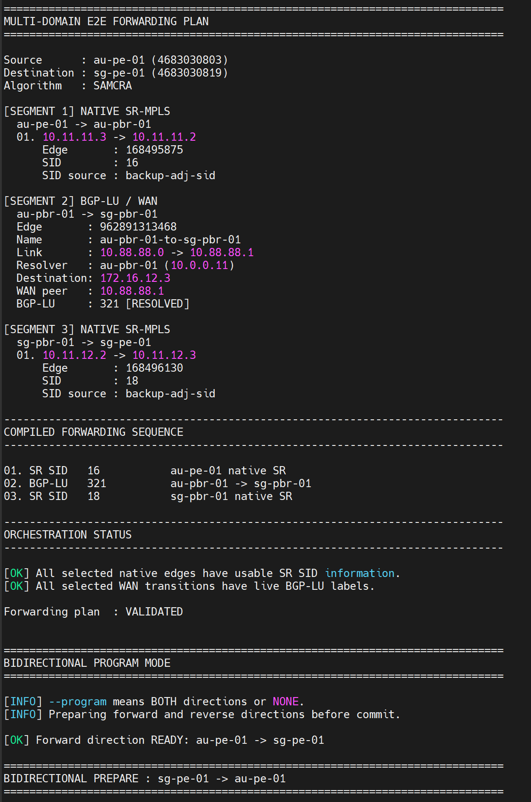
3. Reverse Direction Is Computed Independently
The reverse service direction is not copied from the forward result. The orchestrator runs a second global path computation from SG-PE01 to AU-PE01 and independently selects SG-PBR01 → AU-PBR01.
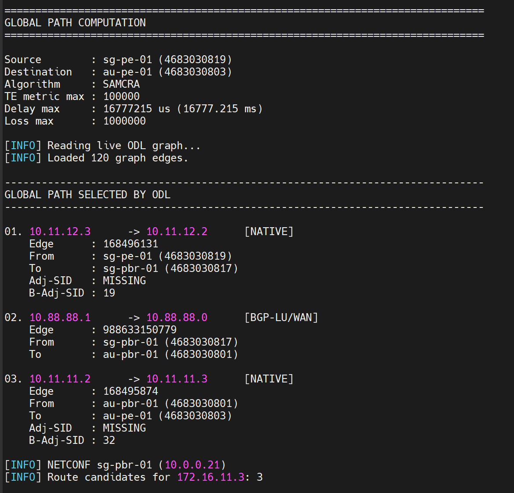
4. Reverse Plan Resolves BGP-LU 341 and Both Directions Pass Pre-Check
The reverse forwarding compiler resolves BGP-LU ingress label 341. The bidirectional pre-check then confirms that both AU→SG and SG→AU plans are ready before any PCEP change is committed.
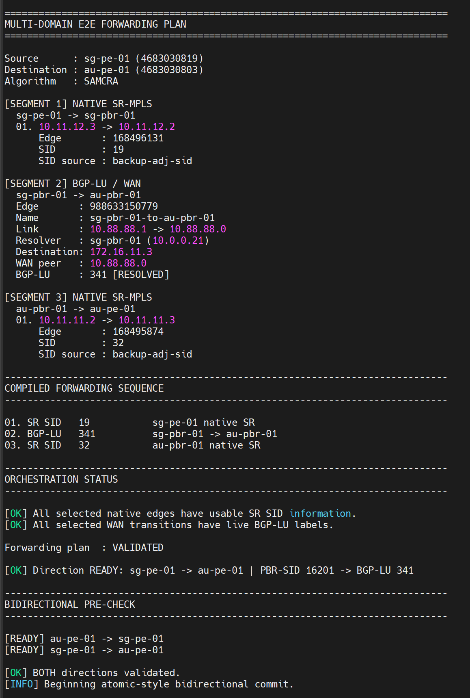
5. Atomic-Style Bidirectional PCEP Commit
Only after both plans are validated does the orchestrator program the two PCCs. The baseline commit installs AU→SG ERO 16101 → 321 and SG→AU ERO 16201 → 341. Both LSPs use the same transaction timestamp, showing that they were created as one logical bidirectional operation.
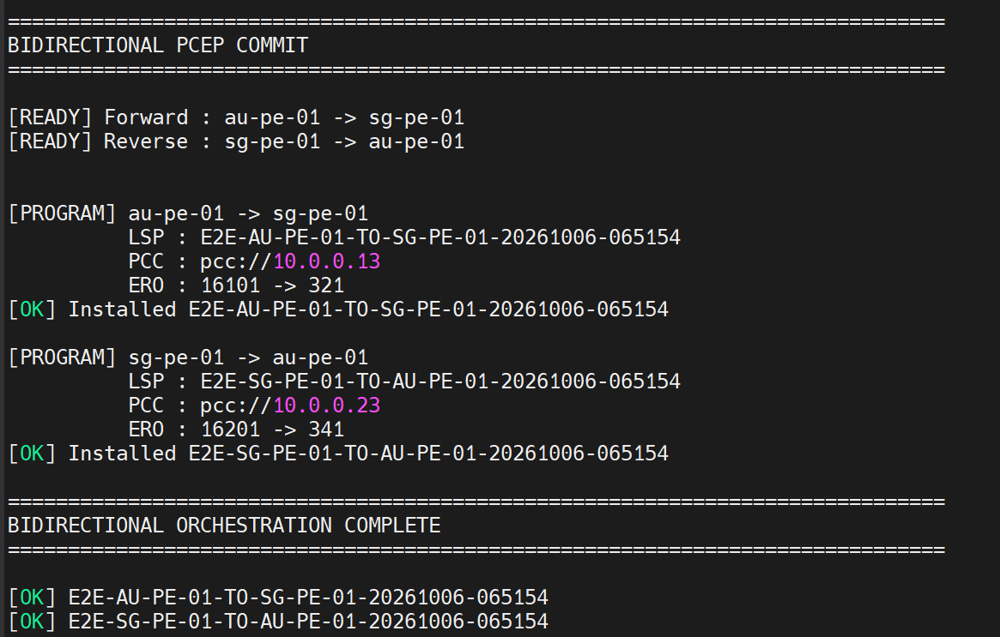
321 and 341), both directions passed pre-check, and PCEP installed
the bidirectional LSP pair successfully.
Bidirectional PCEP Programming — Current Proof
The current orchestrator programs both service directions only after both plans are ready. The screenshots below show the two tested WAN choices using the final forwarding-compiler logic.
PBR01 Path
PCEP installed the bidirectional LSP pair using AU→SG ERO 16101 → 321 and SG→AU ERO 16201 → 341.
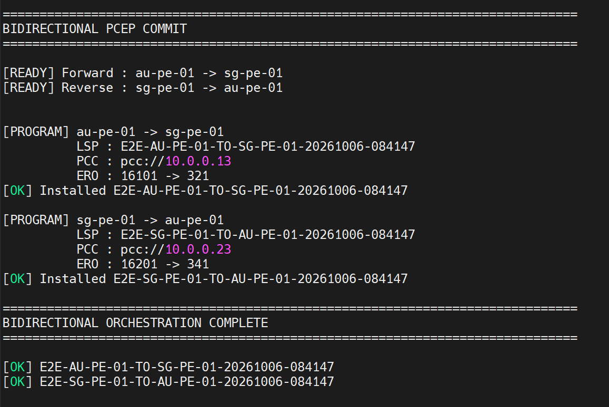
PBR02 Path
After the path preference changed, PCEP installed the alternate pair using AU→SG ERO 16102 → 4625 and SG→AU ERO 16202 → 378.
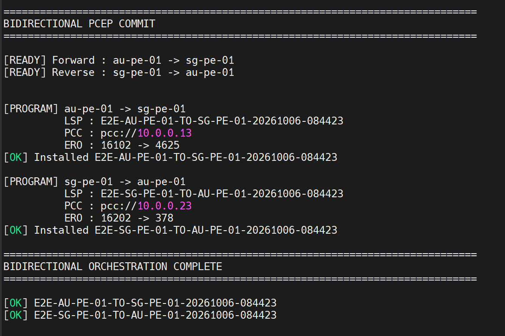
Router-Side Forwarding-State Verification
The current public package uses the router forwarding state from the same PBR01 and PBR02 test captures rather than older PCC screenshots from a previous forwarding-compiler revision. This avoids mixing historical ERO label semantics with the current translated BGP-LU ingress-label model.
PBR01 Router State
AU-PE01 installs the SPRING-TE route toward the PBR01 path. The route has two next-hop resolutions: the active entry via ge-0/0/5.0 pushes only the BGP-LU ingress label 321, while the alternate resolution via ge-0/0/6.0 pushes 321 with the PBR01 Node-SID 16101 on top.
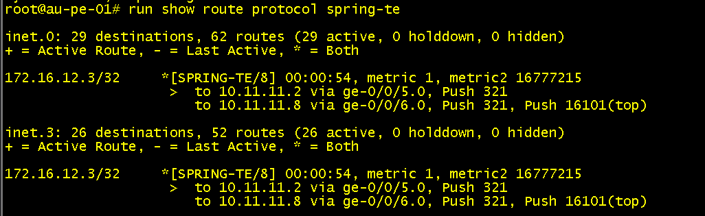
PBR02 Router State
After the path preference changes, AU-PE01 installs the corresponding PBR02 forwarding state. The active entry via ge-0/0/6.0 pushes only the BGP-LU ingress label 4625, while the alternate resolution via ge-0/0/5.0 pushes 4625 with the PBR02 Node-SID 16102 on top.
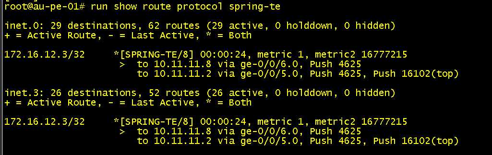
show path-computation-client lsp extensive from the current run can be added as an additional PCC control-plane proof without creating that ambiguity.
Baseline Router and Data-Plane Verification — PBR01
The baseline test uses the lower-latency PBR01 pair between Australia and Singapore. This section follows the complete evidence chain from the ODL Traffic Engineering Database, to the head-end SPRING-TE forwarding entry, to the MPLS labels observed in transit, and finally to the customer EVPN service carried across the selected transport path.
1. ODL TED Selects the Lower-Latency PBR01 Path
The controller-wide TED shows the AU↔SG PBR01 path at roughly 51 ms in each direction, while the PBR02 pair is roughly 101 ms. The same view exposes the BGP-LU label mappings used later by the forwarding compiler.
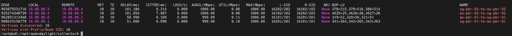
For AU-PBR01 → SG-PBR01, the live mapping includes 321 → 51. In the reverse direction, SG-PBR01 → AU-PBR01 includes 341 → 264.
2. Head-End SPRING-TE Forwarding Entry
Junos installs the controller-derived SPRING-TE route for 172.16.12.3/32. The forwarding entry shows the BGP-LU ingress label 321, with the selected PBR01 SR Node-SID 16101 used to reach the border router when required by the next-hop resolution.
3. MPLS Traceroute — Label Translation Visible
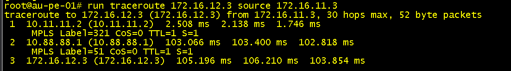
The first transit hop exposes MPLS label 321 and the following WAN hop exposes label 51. This directly matches the ODL BGP-LU mapping 321 → 51: the ingress PE pushes 321 and AU-PBR01 swaps it to 51 toward the WAN.
4. CE-to-CE EVPN Service Validation
The final test is performed between the customer-edge routers, not only between the PE loopbacks. The point-to-point subnet 192.168.0.0/31 represents the customer service between the two ends, with EVPN providing the service connectivity across the backbone.
The underlying transport is the multi-domain SR-MPLS/BGP-LU path selected by ODL and programmed through PCEP. This separates the service layer from the transport layer: EVPN carries the customer service, while the controller determines how that service is transported through the backbone.
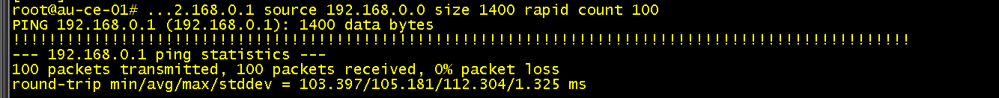
Result: 100 packets transmitted, 100 received, 0% packet loss. This confirms that the EVPN service remains operational end to end over the controller-selected PBR01 transport path.
Engineering Note — LSP Traffic Counters
In the Junos operational outputs checked during this lab, we did not observe a directly usable per-LSP packet or byte counter for the externally provisioned SPRING-TE LSP. This is a statement about the commands and software behaviour observed in this test, not a claim that such counters can never exist in other Junos releases, platforms or telemetry paths.
For that reason, data-plane proof is built from several independent forwarding indicators rather than from a single LSP statistics counter: the installed SPRING-TE forwarding entry, the MPLS labels observed in traceroute, and successful CE-to-CE EVPN service traffic.
If a traffic-volume delta is required, packet and byte counters on the selected WAN interface can also be sampled before and after a test flow. This provides a practical way to confirm that traffic has moved onto the selected physical path even when the LSP object itself does not expose traffic statistics.
Baseline Evidence Chain
ODL TED / Telemetry → PBR01 Selected → SPRING-TE FIB Installed → MPLS 321 → 51 Observed → EVPN CE-to-CE Traffic 100/100
Constraint-Driven Bidirectional Path Re-Optimization
To demonstrate path re-calculation under a controlled lab condition, the WAN latency values were deliberately changed so that the previously preferred PBR01 path became less attractive and the PBR02 path became the lower-latency candidate. After the updated telemetry was reflected in ODL, the orchestrator was run again with the same SAMCRA constraints. ODL then re-computed the constrained path and selected the PBR02 pair.
This is an explicit re-provisioning demonstration: the latency change was intentionally introduced in the lab, the orchestrator was re-run, and the resulting bidirectional LSPs were programmed through PCEP. It is not presented as an autonomous continuous closed-loop controller.
A controlled latency change reversed the preference between the two AU↔SG border-router pairs. The orchestrator was then run again, SAMCRA selected the lower-latency PBR02 path, the forwarding compiler derived the new SR and BGP-LU ingress labels, and both directions were re-provisioned through PCEP.
AFTER — PBR02 Selected
The same evidence chain used for the baseline is repeated after the latency change: ODL TED → SPRING-TE forwarding entry → MPLS traceroute → CE-to-CE EVPN service validation.
1. ODL TED Shows the New Lower-Latency PBR02 Path
After the telemetry change, the PBR02 pair is approximately 51 ms in both directions, while the PBR01 pair is approximately 101 ms. This gives SAMCRA a clear latency-driven reason to select PBR02.
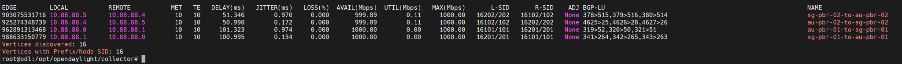
The selected AU-PBR02 → SG-PBR02 WAN edge carries the mapping
4625 → 25; the reverse SG-PBR02 → AU-PBR02 direction includes
378 → 515.
2. Controller Decision, Forwarding Compilation and Bidirectional Commit
The orchestrator output closes the gap between the telemetry change and the router-side forwarding state. It shows the live ODL graph being read, SAMCRA selecting the PBR02 path in the forward direction, the BGP-LU ingress label 4625 being resolved, the reverse direction being computed independently with BGP-LU ingress label 378, and both directions being validated before the PCEP commit begins.
Forward Path Selected by ODL
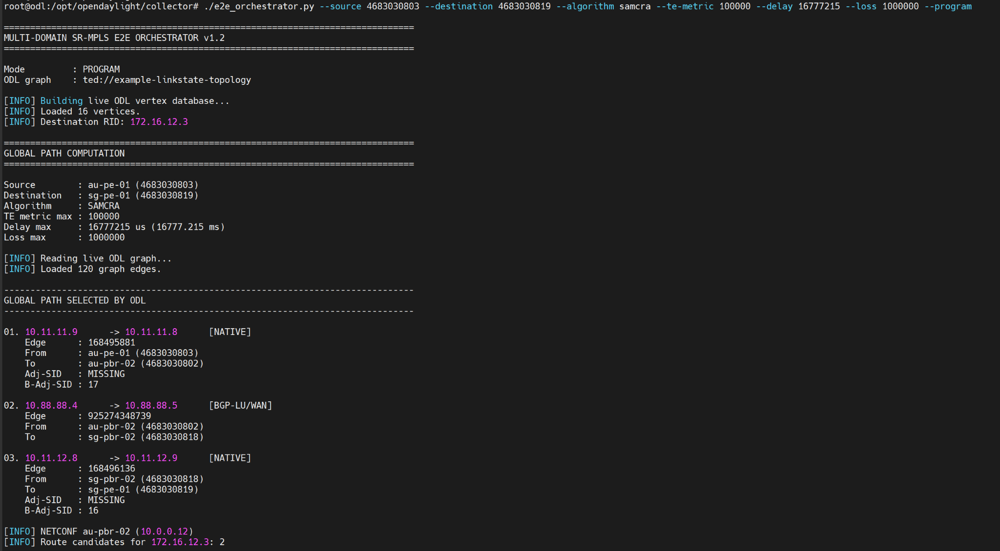
Forwarding Plan Compiled
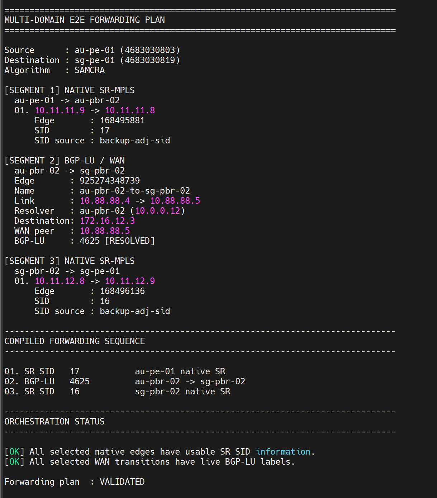
Reverse Path Computed Independently
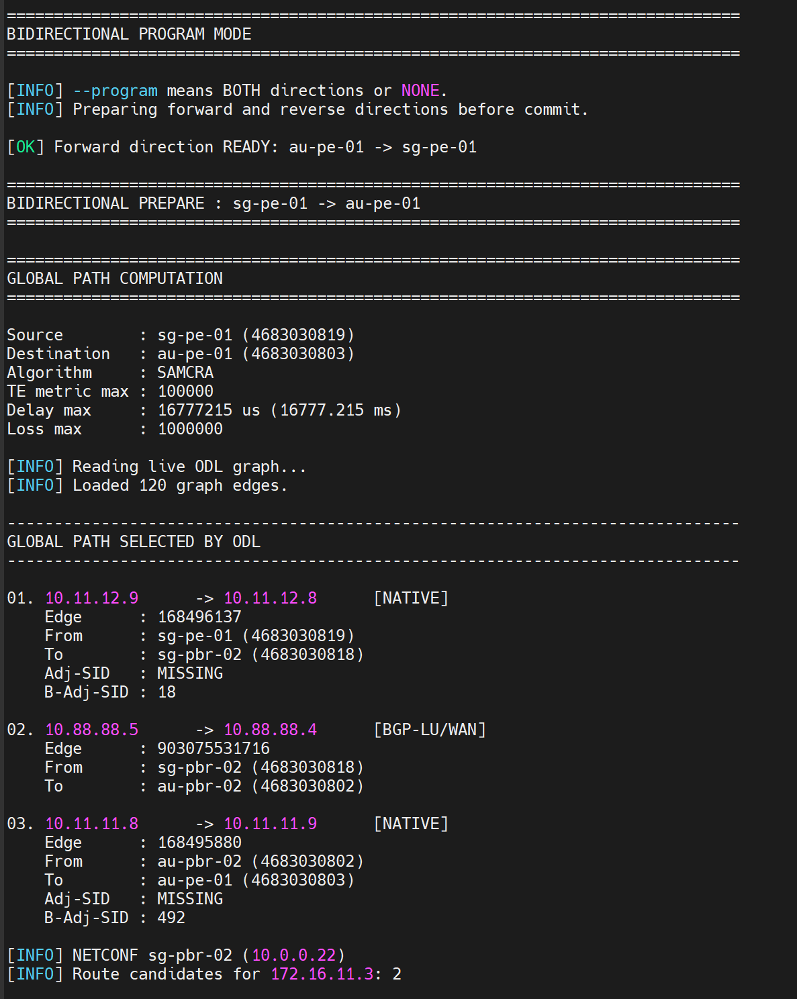
Reverse Forwarding Plan Validated
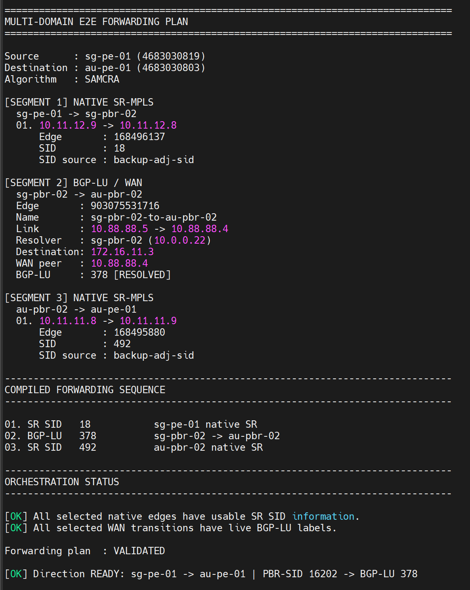
Atomic-Style Bidirectional PCEP Commit
Only after both directions pass pre-check does the orchestrator program the PCCs. The final commit shows AU→SG ERO 16102 → 4625 and SG→AU ERO 16202 → 378, with both LSPs accepted and installed using the same transaction timestamp.
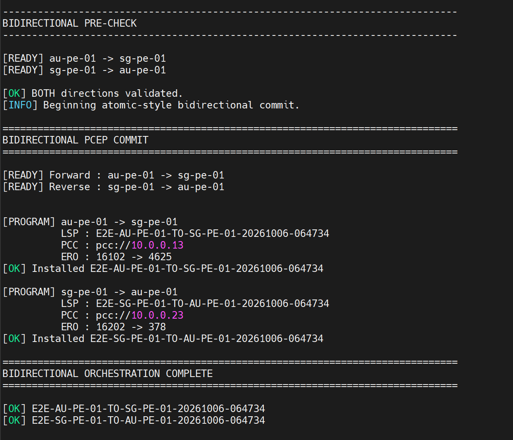
3. Head-End SPRING-TE Forwarding State Changes to PBR02
Junos installs a new controller-derived SPRING-TE route for 172.16.12.3/32. The forwarding entry now uses BGP-LU ingress label 4625 and the selected PBR02 SR Node-SID 16102, replacing the previous PBR01 values 321 and 16101.
4. MPLS Traceroute Confirms the New Label Translation
The first visible MPLS hop now carries label 4625, followed by label
25 on the WAN hop. This directly matches the ODL BGP-LU mapping
4625 → 25: the ingress PE pushes 4625 and AU-PBR02 swaps it to 25 toward
the WAN.
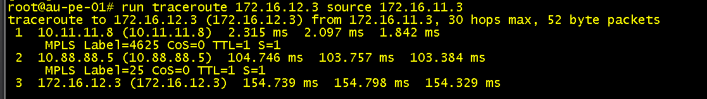
5. CE-to-CE EVPN Service Remains Operational
The customer service uses the point-to-point subnet 192.168.0.0/31 between the two CE routers, with EVPN providing service connectivity across the backbone. After the transport path moved to PBR02, a 100-packet CE-to-CE test again completed with 0% packet loss.
Transport layer: controller-selected SR-MPLS + BGP-LU path via PBR02
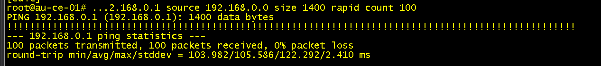
Result: 100 packets transmitted, 100 received, 0% packet loss. This confirms that the EVPN customer service remains operational after the underlying multi-domain transport path is re-provisioned.
6. Before vs. After — Path and Label Set Change Together
| BEFORE — PBR01 | AFTER — PBR02 | |
|---|---|---|
| AU → SG WAN latency | ~51 ms | ~51 ms after preference change |
| Selected AU border router | AU-PBR01 | AU-PBR02 |
| Selected SG border router | SG-PBR01 | SG-PBR02 |
| AU → SG PCEP ERO | 16101 → 321 | 16102 → 4625 |
| AU → SG BGP-LU swap | 321 → 51 | 4625 → 25 |
| SG → AU PCEP ERO | 16201 → 341 | 16202 → 378 |
| CE service | 100/100, 0% loss | 100/100, 0% loss |
Challenges Encountered and Lessons Learned
The most important engineering lesson from the lab was that global topology visibility, path computation and forwarding reachability are different problems. BGP-LS gave ODL a global topology view, but remote SR information alone did not make every SID directly reachable across independent IGP domains.
The BGP-LU stitched design therefore required an additional forwarding-compilation step. The orchestrator had to correlate the selected WAN transition with destination-specific BGP-LU state, translate the remote/outgoing label into the local/incoming label required at the ingress, and then build the PCEP ERO. This is why a value such as 321 is programmed at the head-end even though the corresponding downstream BGP-LU label may be 51.
Another lesson was that path-computation metadata and forwarding-programming metadata are not always the same thing. ODL may report an edge-level backup Adj-SID such as 16, while the PCEP compiler represents that regional part of the path with the selected PBR Node-SID such as 16101. These are different SR semantics, not conflicting values.
Bidirectional services also need to be treated as one logical operation. Forward and reverse paths are calculated independently because telemetry and forwarding state are directional, but the orchestrator programs them only after both directions pass pre-check. If the second direction fails during programming, the first direction is rolled back.
Why a Dedicated WAN IS-IS / SR-MPLS Domain Would Be Cleaner
The current BGP-LU stitched design is operationally valid and proves true end-to-end service forwarding across independent regional SR-MPLS domains. However, a dedicated WAN IS-IS / SR-MPLS domain would provide a cleaner native SR model because the WAN itself would advertise SR-aware topology, metrics, Node-SIDs and Adj-SIDs.
That would reduce the need for BGP-LU label translation and allow the path to be expressed more directly as regional SR → WAN SR → regional SR. It would also provide a clearer end-to-end SR representation and align the topology model more closely with the forwarding model.
A further advantage is that SR-TE path computation does not have to depend on a centralized controller. If the head-end router has sufficient SR topology and TE information, it can compute an SR-TE path itself. In that architecture, ODL/PCE remains valuable for global optimization, telemetry aggregation, policy and multi-domain orchestration, but it is not the only place where basic SR-TE path selection can occur.
7. Current Demo Scope
For this demonstration, path changes are re-provisioned explicitly rather than by a persistent daemon updating an existing LSP in place. This keeps the workflow deterministic while still proving the full decision and programming chain: telemetry change → constrained recomputation → alternate path → new label compilation → bidirectional PCEP provisioning → live service validation.
The current PCEP compiler demonstration validates paths containing exactly one inter-domain BGP-LU transition. Wider multi-transition forwarding compilation remains an extension point.